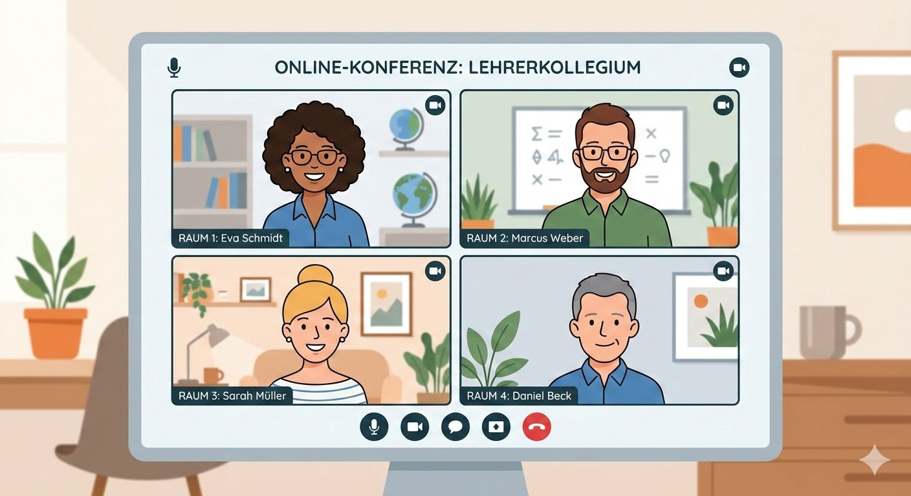

In Hinblick auf kooperative Lernformen eröffnen digitale Lernsettings zahlreiche neue Möglichkeiten. Allen voran wird eine ortsunabhängige Zusammenarbeit ermöglicht (Kerres, 2001, S. 313). Die Lernenden müssen sich nicht in Gruppen zusammenfinden, um gemeinsam an einem Projekt zu arbeiten oder zu lernen. Über Videokonferenzen oder Chats kann zeitgleich (synchron) oder auch zu unterschiedlichen Zeiten (asynchron) am selben Projekt oder Thema gearbeitet werden (Kerres, 2001, S. 313). Dadurch ist auch eine gemeinsame Arbeit über Ländergrenzen hinweg möglich. Über MOOCs (Massive Open Online Courses) können sich viele Menschen online in Kurse renommierter Universitäten und Dozenten einschreiben. Somit ist eine Teilhabe an diesem Bildungsangebot ohne physische Präsenz möglich (Niegemann & Weinberger, 2020, S. 86). In digitalen Lernumgebungen gibt es oft auch Tools, die Peer-Feedbacks anleiten. Dadurch wird nicht nur der Austausch der Zusammenarbeitenden verstärkt gefördert. Das gegenseitige Erklären, Begründen und Bewerten kann zu einem tieferen Verständnis des Themas beitragen (Niegemann & Weinberger, 2020, S. 83). Über bereits erwähnte Kommunikationstools ist auch ein direkter Austausch mit den Lehrkräften möglich, um etwa Fragen zu stellen oder Feedback einzuholen (Kerres, 2001, S. 257-260). Allen voran gibt es einen großen Hauptvorteil, den digitale Lernumgebungen auf Grund ihrer Gegebenheit mit sich bringen: Soziale Fähigkeiten (Niegemann & Weinberger, 2020, S. 83) und die Kommunikationskompetenz können in besonderem Maße gefördert werden (Kerres, 2001, S. 257-260). Im gleichen Zuge können diese Kompetenzen durch digitale Lernumgebungen paradoxerweise auch gefährdet werden. Durch die räumliche Distanz fehlt es an persönlicher Nähe. Mimik, Gestik oder andere nonverbale Kommunikationsformen können je nach Kommunikationsmittel schlecht oder gar nicht wahrgenommen werden (Kerres, 2001, S. 260-263). Gespräche können dadurch weniger lebendig und spontan ablaufen, was den Lernprozess negativ beeinflussen kann (Kerres, 2001, S. 260). Besonders in großen Gruppen besteht auch die Gefahr, dass einzelne Mitglieder nicht ausreichend beteiligt werden (Kerres, 2001, S. 261) oder sich selbst weniger aktiv beteiligen (Niegemann & Weinberger, 2020, S. 251). Allgemein sind Gruppenprozesse schwerer zu steuern, da besonders die Rollenverteilung in der Gruppe eine Hürde darstellt und Zusammengehörigkeitsgefühle digital oft weniger ausgeprägt werden (Kerres, 2001, S. 261). Betrachtet man diese Vor- und Nachteile, so lässt sich zusammenfassend folgendes sagen: Digitale Lernumgebungen eröffnen neue Möglichkeiten für Austausch und Zusammenarbeit. Gleichzeitig ersetzen sie persönliche Begegnungen nicht vollständig. Damit soziale Beziehungen gut gelingen, müssen digitale Lernangebote also bewusst geplant und gestaltet werden.

Vorteile bezüglich Technik und Organisation liegen auf der Hand: digitale Lernsettings vereinen viele Medien an einem Ort, die miteinander kombiniert werden können. Oft sind Texte, Videos, CBT-Programme oder auch Kommunikationswerkzeuge in die Lernumgebung integriert (Mayrberger et al., 2017, S. 15-18). Dadurch ergibt sich eine Vielzahl von Funktionen, die das Lernen unterstützen. Lernplattformen ermöglichen und erleichtern Organisation, Diagnose, Dokumentation und Kommunikation (Mayrberger et al., 2017, S. 15-18). So profitieren nicht nur die Lernenden, sondern auch Lehrkräfte von dieser Art der Lernumgebung. Dabei helfen ihnen sogenannte Autorenwerkzeuge. Das sind spezielle Werkzeuge, die Lehrkräfte zur Erstellung und Verwaltung digitaler Lernmaterialien nutzen können (Niegemann & Weinberger, 2020, S. 585). Da der Aufbau digitaler Lernsettings modular und anpassbar ist, können die Lehrkräfte sie mithilfe dieser Werkzeuge nach eigenen Vorstellungen gestalten. Sie können passgenau auf die Anforderungen und den Lernstand der Lerngruppe zugeschnitten werden (Mayrberger et al., 2017, S. 133). Um diese Vorteile ausschöpfen zu können, ist allerdings oft ein hoher technischer und organisatorischer Aufwand erforderlich. Die Planung, Umsetzung und Betreuung internetbasierter Lernangebote wird häufig unterschätzt (Kerres, 2001, S. 313). Viele synchrone Videoformate wie Videokonferenzen oder Tele-Teaching erfordern technisch betrachtet komplexe Koordinations- und Steuerungsmechanismen. Der technische Aufwand ist demnach recht hoch (Kerres, 2001, S. 257-260). Auch sollte man als Lehrkraft den organisatorischen Aufwand nicht vernachlässigen. Zusätzliche Planung und auch Ressourcen sind nötig, um die digitalen Lernsettings gewinnbringend nutzen zu können. Trotz des hohen Maßes an Selbstständigkeit, das bei der Bearbeitung gefordert ist, ist zumeist dennoch eine tutorielle Betreuung durch die Lehrkräfte nötig (Kerres, 2001, S. 313). Auch wenn die Materialien gut produziert sind, sind sie keine Selbstläufer. Um den gewünschten Lernerfolg zu erzielen, müssen sie didaktisch eingebettet werden. Nur dann wird aus digitalen Angeboten eine gute digitale Lernumgebung (Mayrberger et al., 2017, S. 117). Neben der Umsetzung bereitet auch die Ausstattung oft Probleme. Nicht alle Bildungseinrichtungen verfügen über die gleiche technische Ausstattung. Diese unterscheidet sich je nach Bildungsbereich und Ort deutlich (Niegemann & Weinberger, 2020, S. 585). Auch die unterschiedlich ausgebaute Infrastruktur verstärkt diese Unterschiede. Es sind funktionierende Geräte, aber auch funktionierende Netzwerke erforderlich (Kerres, 2001, S. 313), was nicht allerorts der Fall ist. Dies ist ein Grund dafür, dass häufig technische Probleme auftreten. Vor allem die Einführung von beispielsweise Lernplattformen stellt die Bildungseinrichtungen vor Herausforderungen, da hier vermehrt technische Hürden überwunden werden müssen. Doch auch rechtliche Hürden gilt es zu meistern (Kerres, 2001, S. 313). Besonders der Datenschutz spielt hierbei eine große Rolle. Da viele Systeme die Daten der Lernenden erfassen, müssen diese besonders geschützt werden (Mayrberger et al., 2017, S. 117). Digitale Inhalte sind oft urheberrechtlich geschützt. Aus diesem Grund dürfen sie nicht beliebig kopiert und weitergegeben werden (Mayrberger et al., 2017, S. 117). Dadurch sind sie auch mit zusätzlichen Kosten verbunden. Auch bei Inhalten, welche die Lernenden in digitalen Lernumgebungen selbst produzieren, wie etwa Bilder oder Musik, müssen die Urheberrechte beachtet werden (Niegemann & Weinberger, 2020, S. 585). Rechtliche Fragen sind daher ein fester Bestandteil der Planung digitaler Lernangebote. Konkrete Informationen dazu sind auf der Website unter dem Punkt „Urheberrecht“ zu finden. Im Kern kann man zusammenfassen, dass digitale Lernumgebungen viele organisatorische Möglichkeiten und technische Flexibilität bieten. Dafür ist jedoch eine gewisse technische Ausstattung, eine stabile Infrastruktur, sorgfältige Planung und kontinuierliche Betreuung nötig, damit sie im Schulalltag zuverlässig funktionieren. Die rechtlichen Bedingungen müssen dabei beachtet und eingehalten werden.
Digitale Lernumgebungen werden seit einigen Jahren zunehmend im schulischen Kontext
eingesetzt, insbesondere im regulären Fachunterricht sowie in ergänzenden Lernformaten. Sie
ermöglichen es, Lerninhalte flexibel bereitzustellen und stärker auf die unterschiedlichen
Lernvorraussetzungen der Schüler und Schülerinnen einzugehen. Durch zeit- und
ortsunabhängige Zugänge sowie modulare Aufgabenstrukturen eröffnen sie erweiterte
Gestaltungsspielräume für Unterrichtsprozesse. Digitale Lernumgebungen sind inzwischen in
vielen Schulen fest etabliert und aus dem schulischen Alltag kaum mehr wegzudenken. Denn die
Lernenden können in ihrem eigenen Tempo arbeiten, Inhalte wiederholen oder auch vertiefen und
schritt für schritt Verantwortung für den eigenen Lernprozess übernehmen. Sie ermöglichen
außerdem, Lerninhalte zeit-und ortsunabhängig bereitzustellen. Durch individuell wählbare
Lernwege, unterschiedliche Schwierigkeitsgrade und flexible Bearbeitungszeiten, können die
Lernenden in ihrem eigenen Tempo und auf bestmögliche weise Inhalte wiederholen oder vertiefen
(Kerres, S.297-298). Darüber hinaus bieten diese vielfältige Darstellungsmöglichkeiten und
Übungsformen, exemplarisch durch Texte, Bilder, kurze Erklärvideos oder interaktive Lerninhalte.
Diese Vielfalt kann dazu beitragen, die Inhalte anschaulicher zu vermitteln und unterschiedliche
Lernzugänge zu berücksichtigen und Differenzierung zu erleichtern (Niegemann, 2020,
S.31-34/191-194). Differenzierung erfolgt dabei nicht nur über das Anforderungsniveau, sondern
auch über Präsentationsformen, Unterstützungsangebote und Bearbeitungswege. Dabei steht die
Förderung der intrinsischen Motivation durch eine Umstellung von überwiegend lehrerzentrierten
hin zu stärker lernerzentrierten Lehr- und Lernarrangements im Zentrum (Niegemann 2020,
S.99-101). Digitale Lernumgebungen entfalten ihre Lernwirksamkeit nicht automatisch durch ihren
Einsatz. Ihre Wirksamkeit entsteht erst durch gezielt didaktische Gestaltung, Strukturierung und
Betreuung (Kerres, 2007, S.300-302; Niegemann, 2020, S. 95-101). Richtig gestaltet,
unterstützt sie die Entwicklung selbstständiger Lernstrategien und fördert dabei die aktive
Auseinandersetzung mit den Unterrichtsinhalten.
Digitale Lernumgebungen eröffnen vielfältige Potenziale für Lernende, Unterrichtsgestaltung und
schulische Organisation. Jedoch auch Herausforderungen, die im Schulischen Kontext
berücksichtigt werden müssen. Wissenschaftliche Erkenntnisse zeigen, dass digitales Lernen
klare Strukturen und pädagogische Begleitung erfordert. Insbesondere für die niedrigen
Klassenstufen und für Lernanfänger führt autodidaktisches Lernen mit digitalen Medien zu
geringen Lernerfolgen, wenn keine systematische Betreuung erfolgt (Kerres, 2007, S.
297-300). Darum ersetzen digitale Medien weder den Unterricht noch die Rolle der Lehrkraft.
Vielmehr verändern sie die professionelle Rolle der Lehrkraft hin zu einer stärker strukturierenden,
beratenden und lernprozessbegleitenden Funktion. Digitale Lernumgebungen fordern zudem
selbstregulative Kompetenzen, die nicht bei allen Lernenden gleichermaßen entwickelt werden
(Niegemann, 2020, S.90-94). Dazu zählen Planungsfähigkeit, Ausdauer, metakognitive
Strategien und die Fähigkeit zur realistischen Selbsteinschätzung. Ohne gezielte Anleitung könnte
dadurch die Gefahr entstehen, das die Kinder in ihrem Lernprozess überfordert sind (Kerres,
2007, S. 299). Ein weiterer Aspekt, der in diesem Zusammenhang zu beachten ist, ist die Gefahr
des oberflächlichen Lernens. Die Nutzung digitaler Lernumgebungen zur Darstellung von
Informationen ohne klare Lernziele und didaktische Struktur kann dazu führen, dass Lernen auf
das bloße Anklicken oder Abarbeiten von Inhalten reduziert wird, ohne dass nachhaltig ein
Verständnis gefördert wird (Kerres, 2007, S. 300-302; Niegemann, 2020, S. 17-20). Um
diesem Risiko entgegenzuwirken, sollten digitale Bildungsangebote problemorientierte
Aufgabenstellungen, kooperative Lernphasen sowie strukturierte Reflexionssequenzen beinhalten,
die auf langfristiges Verständnis und Transfer abzielen.
In Anbetracht dessen nimmt die didaktische Gestaltung digitaler Lernumgebungen eine zentrale
Bedeutung ein. Der pädagogische Mehrwert digitaler Medien ergibt sich nicht aus ihrer bloßen
Nutzung, sondern erst aus der Formulierung klarer Lernziele, der Gestaltung strukturierter
Lernprozesse sowie einer aktiven Begleitung durch Lehrkräfte. Es ist insbesondere in den unteren
Klassenstufen von Bedeutung, digitale Lernangebote fest an den Unterricht zu binden und den
Lernprozess bewusst zu steuern. Digitale Lernumgebungen können demnach einen
unterstützenden und erweiternden Beitrag zum Lernprozess leisten, vorausgesetzt, sie werden
gezielt im Rahmen eines pädagogisch gestalteten Unterrichts eingesetzt.
Die Effektivität digitaler Lernumgebungen zeigt sich in der umfassenden Organisation und
Begleitung von Lernprozessen. Feedback und Leistungsbewertung spielen dabei eine
entscheidende Rolle. Feedback wird in der Forschung als grundlegender Bestandteil des Lernens
beschrieben (Niegemann, 2020 S. 370). Es unterstützt Schülerinnen und Schüler dabei, ihre
Lösungen zu überprüfen, Fehler zu erfassen und weitere Lernschritte zu planen. Jedoch ist zu
bedenken, dass Feedback unterschiedlich wirkt, da Lernende über unterschiedliche
Voraussetzungen, Bedürfnisse und Lernstrategien verfügen (Kasakowskii, 2025, S. 14-15/
25). Für die Erziehungsberechtigten ist hervorzuheben , dass digitale Rückmeldungen ein
wirksames Mittel darstellen können, um den Lernfortschritt der Schülerinnen und Schüler
transparent dokumentieren und Entwicklungsverläufe nachvollziehbar machen zu können. Dabei
ist jedoch zu betonen, dass sie den individuellen pädagogischen Support nicht ersetzen können.
Daher ist ein wesentliches Erfolgsmerkmal digitaler Lern-Settings, dass zeitnahes und adaptives
Feedback erteilt wird . In digitalen Self-Assessment-Situationen erhalten Lernende direkt nach der
Bearbeitung einer Aufgabe eine Rückmeldung, die sie bei der Korrektur unterstützt
(Kasakowskii, 2025, S. 14-15/ 152-153). Hierdurch erhalten Schülerinnen und Schüler aller
Altersstufen die Möglichkeit, eigenständig zu überprüfen, inwiefern sie Inhalte fachlich korrekt
erfasst und verstanden haben.Die Ergebnisse zeigen, dass die meisten Systeme vor allem
statisches Feedback geben. Das ist nur begrenzt anpassungsfähig und berücksichtigt nicht
ausreichend, wie Menschen individuell denken. (Kasakowskii, 2025, S. 13/ 29-30).
Zudem bieten digitale Lern-Systeme organisatorische Vorteile. In größeren Lerngruppen ist die
individuelle Rückmeldung durch die Lehrkräfte nur in geringem Umfang möglich. Die Verwendung
automatisierter Rückmeldungen kann in diesem Kontext unterstützend wirken (Kasakowskii,
2025, S. 3/ 13). Die Forschung betont, wie wichtig es ist, dass digitale Lernumgebungen den
Einsatz interaktiver Kommunikationsformen ermöglichen, um Missverständnisse im Austausch mit
Lehrkräften aufzuarbeiten (Kasakowskii, 2025, S. 30-31). In Anbetracht dessen erlangen
sowohl das prozessbegleitende Feedback als auch die strukturelle Gestaltung der
Leistungsbewertung im digitalen Raum eine zunehmende Relevanz.
In schulischen Einrichtungen führt der Einsatz technologiebasierter Assessments nicht nur zu einer
Veränderung der Prüfungsformate, sondern auch zu einer Neuausrichtung der
Leistungsbewertung. Adaptive Testverfahren passen den Schwierigkeitsgrad einzelner Aufgaben
an die vorherigen Antworten der SuS an. Dadurch wird eine höhere Präzision bei der Erfassung
der Kompetenzniveaus ermöglicht, da Unter- oder Überforderung reduziert werden kann
(Niegemann, 2020, S. 494-495). Des Weiteren ermöglichen diese Aufgaben die Erfassung
komplexer Problemlöseprozesse, die in herkömmlichen, stark standardisierten Testformaten nur
schwer zu erfassen sind (Niegemann, 2020 S. 494). Aus mediendidaktischer Perspektive ist
hervorzuheben, dass digitale Leistungsbewertung nicht als technische Ergänzung zu sehen ist,
sondern als wichtiger Bestandteil der didaktischen Konzeption von Lernumgebungen.
Lernangebote sind systematisch zu planen, wenn bestimmte Bildungsziele unter vorgegebenen
Bedingungen erreicht werden sollen (Kerres, S. 82-83). Der Wert der digitalen Aufgaben- und
Prüfungsformate liegt also nicht in ihrer technischen Umsetzung, sondern in ihrer Angemessenheit
zu den angestrebten Lernzielen, Inhalten und Lernprozessen. (Kerres, S. 145-146/225-226).
Insgesamt wird deutlich, dass digitale Feedbacksysteme nicht als Ersatz professioneller Expertise
zu verstehen sind, sondern als strukturierende und unterstützende Werkzeuge, die Lehrkräften
erweiterte Möglichkeiten zur Qualitätssicherung, Diagnose und dialogischen Begleitung von
Lernprozessen eröffnen (Kasakowskij, 2025, S. 136-137).
Im digitalen Wandel ist die Professionalisierung von Lehrkräften ist entscheidend, denn die
Entwicklung von Unterricht findet nicht „nebenbei“ statt, sondern erfordert gezielt Kompetenz- und
Schulentwicklungsprozesse. Professionalisierung in der digitalen Umstellung bedeutet mehr als
nur die Bedienung von Geräten. Es geht auch um die Gestaltung von Unterricht, um die Fähigkeit,
selbstständig zu entscheiden und um die Mitarbeit in der Schule. Dazu gehören auch kritische
Reflexionen („will“), Kompetenzen („skill“) und die schulischen Rahmenbedingungen („tool“)
(Richter, 2024, S. 618). Dazu muss Lehrkräften auch ermöglicht werden, Medien nicht nur als
Methode einzusetzen, sondern Medienthemen kritisch-reflexiv im Unterricht zu thematisieren und
Rahmenbedingungen für den Einsatz und die selbstständige Anwendung mitzugestalten
(Mayrberger, 2017, S. 100-102).
Empirische Studien belegen, dass es bei Lehrkräften ein deutliches Interesse an
Fortbildungsangeboten gibt, die von der Qualitätssicherung begleitet werden und die einen
lernwirksamen Einsatz digitaler Medien zum Ziel haben. Diese sind auf den lernförderlichen
Einsatz digitaler Medien spezialisiert (Richter, 2024, S. 619). Es ist jedoch oft schwierig,
passende Angebote zu finden. Informationen zu Fortbildungen werden als „mangelnd und
inkohärent“ beschrieben. Eine weitere Hürde für den zielgerichteten Kompetenzaufbau ist die
unübersichtliche Struktur und geringe Kohärenz der Angebote (Richter, 2024, S. 621). Online-
Fortbildungen bieten Lehrkräften dagegen mehr Flexibilität. Sie können sie zeit- und
ortsunabhängig absolvieren und das Tempo selbst bestimmen. Dadurch lassen sie sich besser in
einen stark getakteten Berufsalltag integrieren (Richter, 2024, S. 625). Außerdem erweitern sie
die Zugänglichkeit und Skalierbarkeit. Das bedeutet, dass ein größerer Teilnehmendenkreis
erreicht werden kann. Außerdem wird die Zusammenarbeit über regionale Grenzen hinweg
ermöglicht.
Allerdings stellt sich für Lehrpersonal und Schulen die Herausforderung, dass Online-Formate
nicht alle Zielgruppen gleichermaßen erreichen. Lehrkräfte mit weniger digitalen Kompetenzen
nutzen meist Präsenzformate häufiger, sodass digitale Fortbildungsangebote unter Umständen
nicht ausreichend genutzt werden und insbesondere weniger kompetente Gruppen seltener
teilnehmen (Richter, 2024, S. 626-627). Hinzu kommen eingeschränkte nonverbale
Kommunikationsmöglichkeiten sowie zeitliche Verzögerungen in asynchronen Lernformaten, die
die Interaktion und den Austausch unter Lehrkräften zusätzlich erschweren können (Richter,
2024, S. 627-628).

| Vorteile | Nachteile | |
|---|---|---|
| Soziale Interaktion und Beziehungsgestaltung | > orts- und zeitunabhängige Zusammenarbeit > ausgeprägte Feedbackkultur > Förderung der Kommunikationskompetenz |
> unvollständige und unpersönlichere Kommunikation |
| Technisch-norganisatorische Rahmenbedingungen | > viele Medien und Funktionen an einem Ort > individuelles und anpassbares Lernen möglich |
> hoher technischer und organisatorischer Aufwand > gewisses Maß an Ausstattung und Infrastruktur nötig > rechtliche Hürden |
| Didaktisch- Pädagogisch | > ermöglicht Individualisierung und Differenzierung > Unterstützt selbstständiges und eigenverantwortliches Lernen > Bietet unterschiedliche Darstellungen, die unterschiedliche Lernzugänge berücksichtigen |
> didaktische Einbettung zwingend erforderlich > hohe Anforderungen an Selbstregulation/ Lernstrategien > erhöhter Betreeuungsbedarf |
| Feedback und Leistungsbewertung | > zeitnahes/ automatisiertesFeedback > adaptive Tests → präzisere Kompetenzdiagnose > Transparente Dokumentation |
> Feedback häufig wenig individualisiert > Gefahr der Reduktion komplexer Leistungen auf messbare Teilaspekte |
| Professionalisierung der Lehrkräfte | > Digitale Fortbildungen bieten Flexibilität und bessere Zugänglichkeit > Erweiterung der pädagogisch-didaktischen Kompetenzen > Unterstützung schulischer Entwicklungsprozesse |
> hoher Fortbildungsbedarf/unzureichend strukturierte Angebote > Unterschieldliche didaktische Kompetenzen > Online unterrichte erreichen nicht alle Lehrkräfte gleichermaßen |